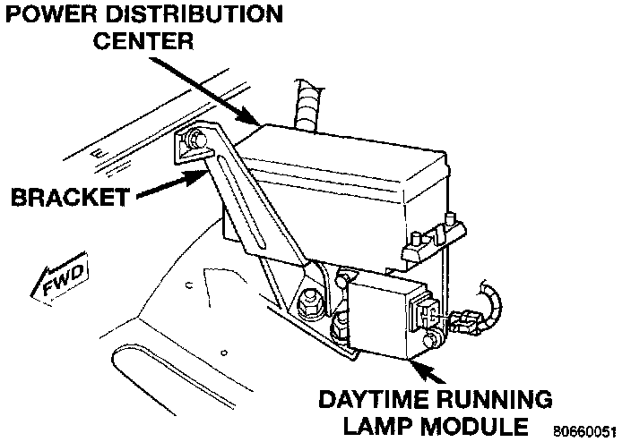

Daytime Running Lamp Control Unit: Service and Repair
REMOVAL1. Open hood.
2. Disconnect electrical connector from module.
Daytime Running Lamp Module:

3. Remove screws holding module to PDC bracket.
4. Separate module from bracket.
INSTALLATION
1. Reverse the removal procedures.